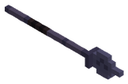

Objetos › Arma

Arpón de Obsidiana Marina
Cuerpo a cuerpo
Arma
| Tipo | Cuerpo a cuerpo |
|---|---|
| Estilo | Estocada |
| Daño | 50 |
| Tiempo entre ataques (s) | 0,55 |
| Alcance | 4,3 |
| Arco (°) | 30 |
Efectos
- Veneno · 15 % · 4 s (al golpear)
Cómo se consigue
- Botín de
 Nautiloth el Amonites Colosal (100 %)
Nautiloth el Amonites Colosal (100 %)
Identificador: sea_obsidian_harpoon · archivo mods/items/unique_loot2.json